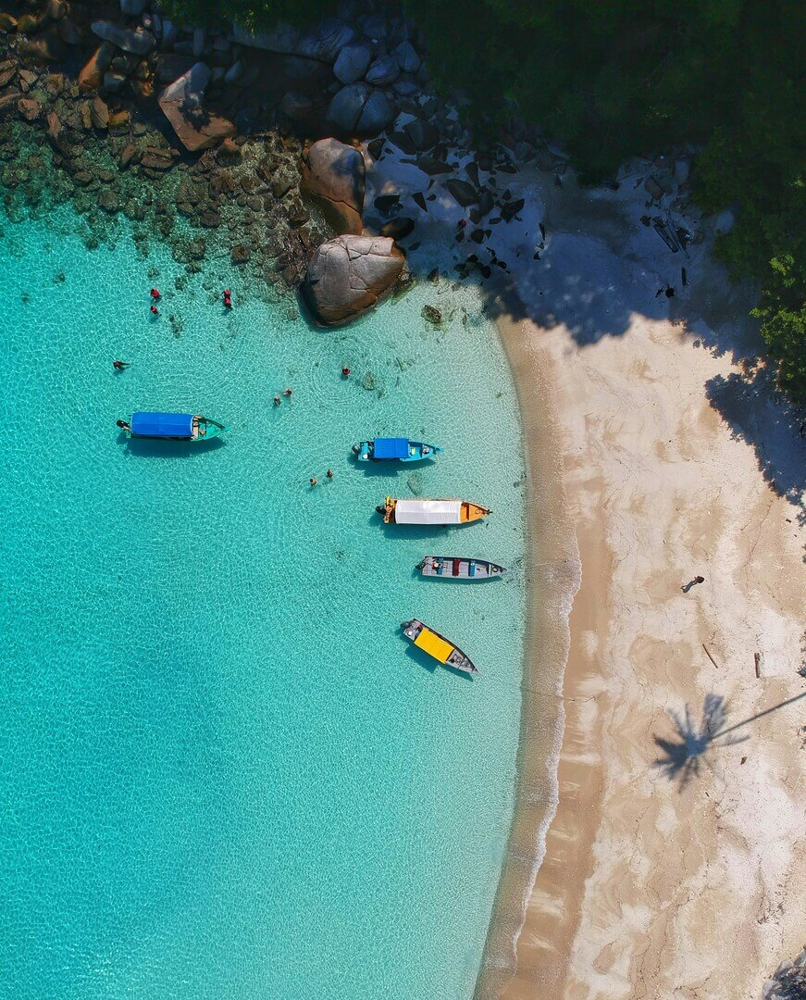

Welcome to Caribbean
Ahoy, me hearties! Welcome to the island paradise of the Caribbean, where the sun kisses the
turquoise waters and the breeze whispers tales of adventure. Whether ye be seasoned buccaneers or
fresh-faced swashbucklers, this be the place where legends are made and treasures await. From the
bustling ports teeming with merchants to the secluded coves hidden from prying eyes, there be no
shortage of plunder to be had and rum to be shared. So hoist yer Jolly Roger high and let us embark on a
journey filled with daring escapades and unforgettable escapades. Ye be amongst kin here, where the
spirit of the sea runs deep and the thrill of the unknown beckons us forth. Raise a tankard and toast to
the boundless horizons that lie ahead, for in the Caribbean, the adventure never ends. Fair winds and
following seas, me hearties! Ahoy, me hearties! Welcome to the island paradise of the Caribbean, where
the sun kisses the turquoise waters and the breeze whispers tales of adventure. Whether ye be seasoned
buccaneers or fresh-faced swashbucklers, this be the place where legends are made and treasures await.
Picture yourself amidst the lush, emerald jungles that blanket these isles, concealing hidden coves and
secret hideaways where only the most daring dare to tread. From the rugged cliffs that guard secluded
beaches to the winding passages of mangrove swamps, this be a land of endless possibilities for those
who know where to look. And as the sun dips low on the horizon, casting a golden hue upon the tranquil
waters, one cannot help but feel the call of the sea echoing through their very soul. So gather your
crew, hoist your sails, and let us embark on a journey filled with mystery, excitement, and the promise
of untold riches. Welcome to the Caribbean, where adventure awaits at every turn.


To Pirate's Hideout
Ah, me fellow mates of the sea, gather 'round and listen close, for I'll spin ye a tale of why this
island be the perfect haven for our rogue brethren. In these emerald waters and verdant isles of the
Caribbean, secrets abound and hideouts aplenty await those with a keen eye and a daring spirit. From the
labyrinthine mangrove swamps where ships can vanish like ghosts into the mist, to the secluded beaches
tucked away behind towering cliffs, this be a realm of endless possibilities for those who seek refuge
from the prying eyes of lawmen and navies. And let us not forget the ancient caves carved by the
relentless sea, their entrances hidden beneath the lush foliage, offering shelter and sanctuary to those
who know where to look. So fear not, me hearties, for in this vast expanse of ocean and land, there be
no shortage of hidden alcoves and secret lairs where we can rest our weary bones and plan our next grand
adventure. Aye, the Caribbean be our playground, and its myriad hideouts our home away from home. So
fear not, me hearties, for in this vast expanse of ocean and land, there be no shortage of hidden
alcoves and secret lairs where we can rest our weary bones and plan our next grand adventure. Aye, the
Caribbean be our playground, and its myriad hideouts our home away from home. Venture into the dense
jungles where ancient ruins lie untouched by time, their crumbling walls offering shelter from prying
eyes above. Seek out the forgotten cays and islets, where only the keenest navigator can chart a course
through treacherous reefs to find safe harbor. And should the need arise, delve into the heart of
bustling ports, where the chaos of commerce provides ample opportunity for those skilled in the art of
deception and stealth. So let us raise our flags high and set sail for these fabled shores, where every
nook and cranny holds the promise of untold riches and untamed freedom. Welcome to the Caribbean, where
every corner whispers the secrets of the sea.
